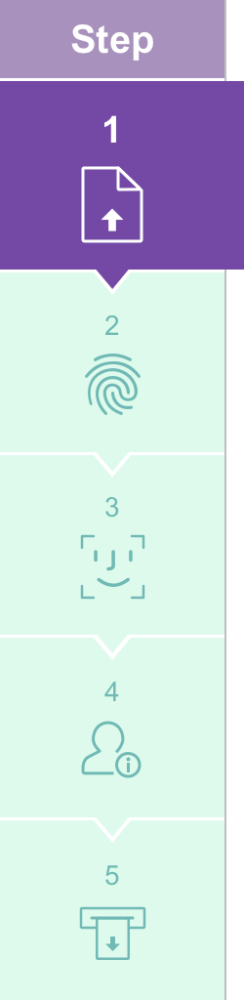

<div class="mainPanel">
    <sc2-timer (timerExpired)="timeExpire()" class="timer"></sc2-timer>
    <input class="buttonTC" type="button" value="{{'SCN-GEN-STEPS.LANGUAGE' | translate}}" (click) = "langButton()">
    
    <p class="steps-div">{{'SCN-GEN-STEPS.NAVIGATION' | translate}}</p>


    <label class="labelStay" >{{'SCN-GEN-STEPS.UPDATE-CONDITION-STAY' | translate}}</label>
    <label class="label1" >{{'SCN-GEN-STEPS.PROCESSING-READ' | translate}}</label>
    <!--   (click)="nextRoute()" -->
    
    <input #imgNext type="button" (click)="nextRoute()">
    <input type="image" src="../../../../../../assets/images/button_Abort.png" class="exitButton" (click)="nextRoute()" />
    <input class="exitButton" type="button" value="{{'SCN-GEN-STEPS.ABORT' | translate}}" (click) = "nextRoute()">
    <label class="footerSteps">scn-gen-step-001</label>
</div>